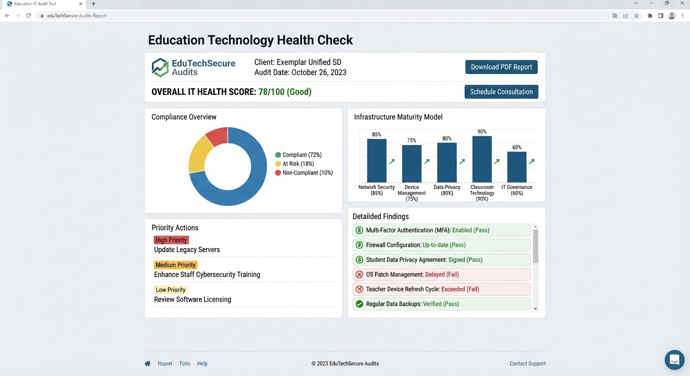

EduAudit audits school IT against KCSIE and the DfE's digital standards — then hands you a bespoke report with clear, ranked advice. No products. No bias. Just the truth.
One independent review. Six areas of your school's technology, each benchmarked against KCSIE, the DfE digital technology standards, and UK GDPR.
KCSIE's non-negotiables. We verify your web filtering and monitoring are real, effective, and reviewed — inside school and beyond.
What's actually in use, how old it is, whether it's managed and patched — and where out-of-life devices are quietly living on your network.
What's installed, used, and paid for. We find the forgotten licences and the unpatchable software Cyber Essentials would flag.
Cabling, switches, Wi-Fi and resilience — benchmarked against the DfE's broadband and network standards for proper teaching delivery.
Access controls, backups, GDPR practice, and whether a named digital lead actually owns the decisions, as the DfE requires.
The same evidence feeds your certification. We're a Cyber Smart reseller — so compliance clarity and certification share one route.
Our platform doesn't rely on someone's memory. Every control is traced to the specific clause of KCSIE, the DfE standard, or the accreditation framework it satisfies.
Each finding links to the exact requirement — so inspectors can see the mapping, not just a verdict.
Repeatable assessments across sites and years, so trusts compare schools fairly and track progress.
Aligned to COBIS, CIS, and IB expectations for international schools following UK curricula.
The same evidence underpins Cyber Essentials and Plus — one audit, two outcomes.
Controls are tested on-site, not accepted on trust. If it isn't real, it isn't counted.
Reports written for heads, governors, and business managers — ranked, clear, and actionable.

Every EduAudit report is written for your school. For each area we set out what's in place, how it compares to the requirement, and — where there's a gap — what to do and when.
Our audit process is designed to give schools a clear, evidence-based view of their current IT position, highlighting what is working well and where improvements may be needed.
We gather the information and documentation needed before the audit, helping us understand your school's environment and priorities.
We review your school's systems, devices, infrastructure, security controls and relevant procedures.
Findings are assessed against the relevant requirements, policies and available evidence.
You receive a clear, structured report showing your compliance position, findings, priorities and recommended actions.
The report provides a practical action plan that your school can use to address gaps, prioritise improvements and support ongoing review.
Your audit doesn't end when the assessment is complete. We provide a clear, practical report that gives school leaders and governors an understandable picture of their current position and what needs to happen next.
A detailed report covering the areas assessed during your audit.
A concise overview designed for senior leadership and governors.
A clear indication of your school's current position against the relevant requirements assessed.
Findings categorised by priority using a clear Red, Amber and Green approach.
A practical list of the most important actions to address first.
Areas where evidence, documentation or supporting information is missing or requires further attention.
Practical recommendations to help your school address identified issues and improve its IT environment.
Where applicable, information to help identify areas that may require attention when preparing for Cyber Essentials.
A report structured so that key findings and priorities can be clearly communicated to governors and senior leadership.
We don't just tell you what we found — we give you a usable report and clear actions.
As a Cyber Smart reseller we prepare, submit, and support your certification — baseline or Plus — using the evidence your audit already collected.
The NCSC-backed baseline covering firewalls, secure configuration, user access, malware protection, and patch management. We handle the assessment end to end.
Self-assessment NCSC backed
The same baseline, independently tested. We harden your estate before the assessor arrives, so you pass first time with real assurance.
Independently tested Higher assurance
Independent school IT audits across the UK and internationally, including schools in the UAE and Hong Kong. UK-standard depth, aligned to COBIS, CIS, and IB — and inspections like KHDA and ADEK.
EduAudit is built on extensive experience working within education IT.
With more than 20 years of individual experience in education IT from each of the people behind the service, we understand the practical challenges schools face — from devices, networks and cloud services to security, filtering, monitoring, data protection and day-to-day IT management.
That experience informs our audit methodology, helping us look beyond paperwork and assess how technology, processes and controls work in the real school environment.
Our approach is practical, evidence-based and focused on giving schools clear information they can act on.
"The audit gave our governors the clearest picture of our IT we've ever had. For the first time we knew exactly where we stood against the DfE standards and what to fix first."
"EduAudit prepared us for our COBIS accreditation visit. The report did the talking — the inspectors were impressed that we could evidence our compliance so clearly."
"We went straight from our audit into Cyber Essentials Plus certification. Having one team that understands both sides made it simple."
Book a no-obligation call. We'll explain what the audit covers for your school and give you a fixed-fee quote straight away.
Book Your Free Call